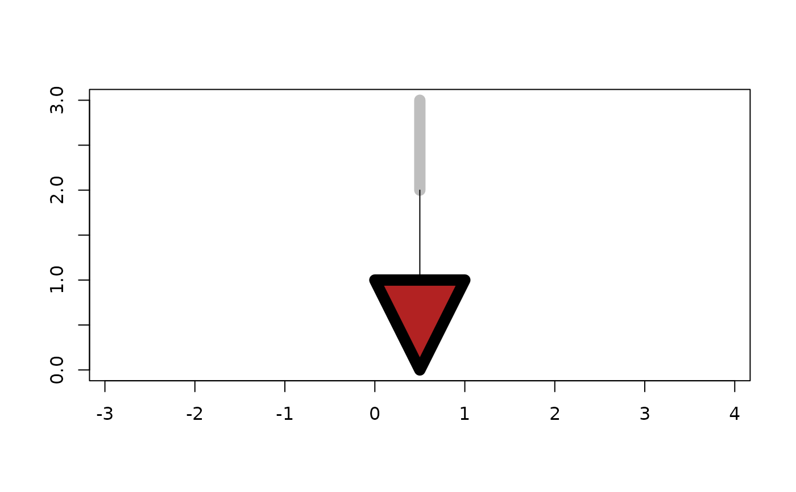

geos_intersection() returns the set of points common to both x
and y.
geos_difference() returns the set of points from x that are
not contained by y.
geos_sym_difference() returns the set of points that are not
common to x and y.
geos_union() returns the set of points contained by either x
or y.
geos_shared_paths() returns a GEOMETRYCOLLECTION containing two
MULTILINESTRINGS: the first containing paths in the same direction,
the second containing common paths in the opposite direction.
geos_snap() snaps the vertices of x within tolerance of y
to y.
geos_clearance_line_between() calculate the clearance (shortest distance)
between x and y, result is a LINESTRING that touches each geometry.
geos_intersection(geom1, geom2)
geos_difference(geom1, geom2)
geos_sym_difference(geom1, geom2)
geos_union(geom1, geom2)
geos_intersection_prec(geom1, geom2, grid_size)
geos_difference_prec(geom1, geom2, grid_size)
geos_sym_difference_prec(geom1, geom2, grid_size)
geos_union_prec(geom1, geom2, grid_size)
geos_shared_paths(geom1, geom2)
geos_snap(geom1, geom2, tolerance = .Machine$double.eps^2)
geos_clearance_line_between(geom1, geom2, prepare = FALSE)GEOS geometry vectors, recycled to a common length.
For _prec() variants, the grid size such that all
vertices of the resulting geometry will lie on the grid.
The maximum separation of vertices that should be considered equal.
Use prepared geometries to calculate clearance line
A GEOS geometry vector along the recycled
length of geom1 and geom2.
poly1 <- "POLYGON ((0 0, 0 10, 10 10, 10 0, 0 0))"
poly2 <- "POLYGON ((5 5, 5 15, 15 15, 15 5, 5 5))"
geos_intersection(poly1, poly2)
#> <geos_geometry[1]>
#> [1] <POLYGON ((10 10, 10 5, 5 5, 5 10, 10 10))>
geos_difference(poly1, poly2)
#> <geos_geometry[1]>
#> [1] <POLYGON [0 0...10 10]>
geos_sym_difference(poly1, poly2)
#> <geos_geometry[1]>
#> [1] <MULTIPOLYGON [0 0...15 15]>
geos_union(poly1, poly2)
#> <geos_geometry[1]>
#> [1] <POLYGON [0 0...15 15]>
line <- "LINESTRING (11 0, 11 10)"
geos_snap(poly1, line, tolerance = 2)
#> <geos_geometry[1]>
#> [1] <POLYGON ((0 0, 0 10, 11 10, 11 0, 0 0))>
geos_shared_paths("LINESTRING (0 0, 1 1, 2 2)", "LINESTRING (3 3, 2 2, 1 1)")
#> <geos_geometry[1]>
#> [1] <GEOMETRYCOLLECTION (MULTILINESTRING EMPTY, MULTILINESTRING ((1 1, 2 2)))>
## generate a line that connects two geometries at their nearest place
## (not necessarily a vertex of either)
a <- as_geos_geometry("LINESTRING (0.5 2, 0.5 3)")
b <- as_geos_geometry("POLYGON ((0 1, 0.5 0, 1 1, 0 1))")
plot(c(a, b), col = c("grey", "firebrick"), lwd = 10)
plot(geos_clearance_line_between(a, b), add = TRUE)
